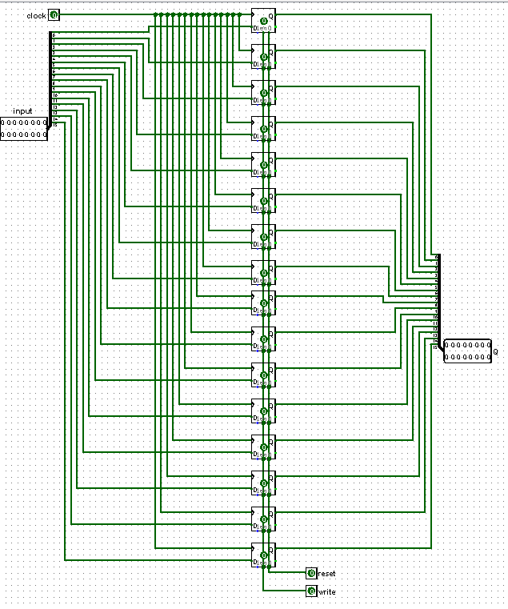
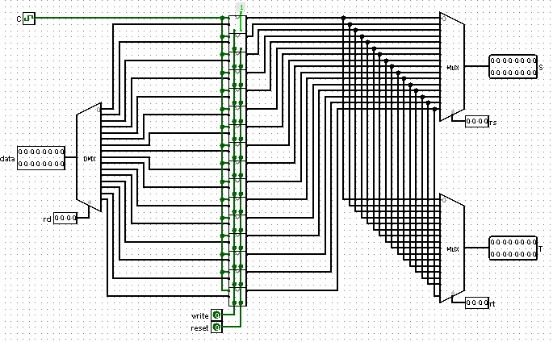
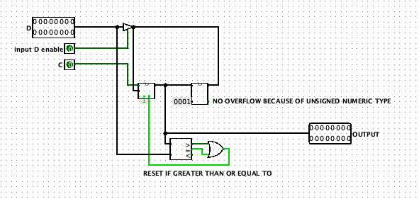
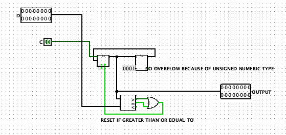
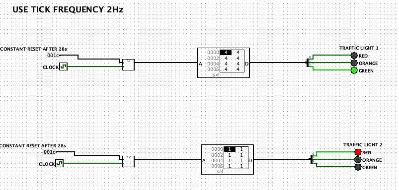
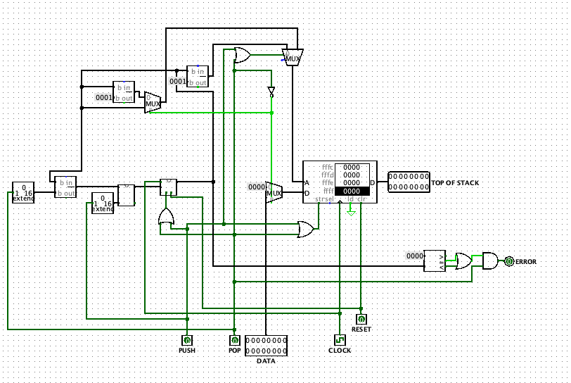

Verslag
Verslag
Titel: Verslag 1
Dit verslag werd opgesteld door:
- Naam: Deputter Pablo
Studentennummer: 20205440
Email adres: Pablo.Deputter@student.uantwerpen.be
- Naam: Etman Max
Studentennummer: 20204398
Email adres: Max.Etman@student.uantwerpen.be
Aantal man-uren besteed: 6 uur
Moeilijkheidsgraad: 3 /10
Inhoud van de oplossing
De oplossing bestaat uit de volgende bestanden (geef alle bestanden op):
Verschillende links:
Verslag 1
Verslag 2
Home
Verslag
16-bit Register
Deze opdracht was gemakkelijk op te lossen door 16 D flip-flops met een falling edge-triggered functie te verbinden met elke input bit en output bit a.d.h.v. splitters en daarna de clock, reset en write input aan elke D flip-flop te verbinden.
Hieronder een afbeelding van de 16-bit register.

Register File
We konden de register file maken op dezelfde wijze als de 16-bit Register. Nu werden alleen de 16 D flip-flops te verwisselen met 16-bit Registers en deze konden we via multiplexors aan elkaar toevoegen zodat de gebruiker via rt en rs kon kiezen de inhoud van een register te bekijken. Met de rd input kan men kiezen in welke register de DATA terecht komt. Hieronder weer een screenshot van de Register File

Counter
Onderstaande afbeelding laat zien hoe wij de derde opdracht hebben opgelost. Voor deze opdracht was het gewoonweg even wat sleutelen met de CLA-ADDER om ervoor te zorgen dat deze kon tellen, uiteindelijk kwamen we tot het
besluit dat we gewoonweg een register als een tijdelijk geheugen konden gebruiken om als output terug te geven en om te vergelijken met de input. Dan gebruikten we een ingebouwede comparator van Logisim om de vergelijking met dit
register en de input mogelijk te maken.

Traffic Light
Voor deze opdracht hebben we de counter aangepast zodat er geen input enable was.

Hierna lieten we de counter 28s lopen nadat deze ge-reset werd. In het ROM geheugen staan de waarden die nodig zijn om de verschillende LED lampjes te laten branden. Deze LED lampjes moeten een verkeerslicht voorstellen. De waarden in het ROM zorgen er voor dat de juiste LED lampjes gaan branden en wanneer de counter ge-reset wordt zal deze dus terug naar de eerste waarde in het ROM geheugen wijzen. Hieronder een afbeelding van het verkeerslicht.

Stack
Hieronder een afbeelding van onze Stack.

De stack werkt hoe een ADT stack zou moeten werken met PUSH en POP operaties. Wanneer de gebruiker een POP operatie op een lege stack wil doen zal de ERROR output op 1 gezet worden. Wanneer er geen operatie gedaan wordt zal de stackpointer naar het bovenste element wijzen.
{kind=link}
{kind=link}
{kind=link}
{kind=link}
{kind=link}
{kind=link}